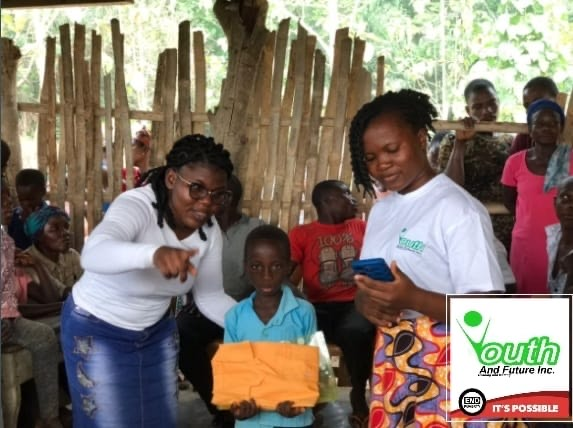
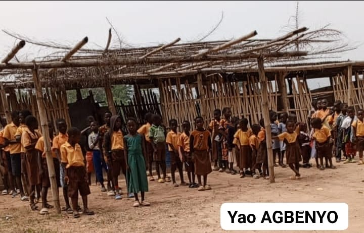
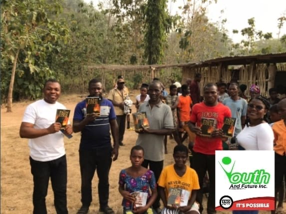

Making learning feel possible.Classroom
engagement with young children in a rural area.
A glimpse of the people and communities at the heart of YAFInc’s work—young learners, local leaders and the teams creating space for a brighter future.

These moments reflect the community visits, learning experiences and relationships that make our mission real.




